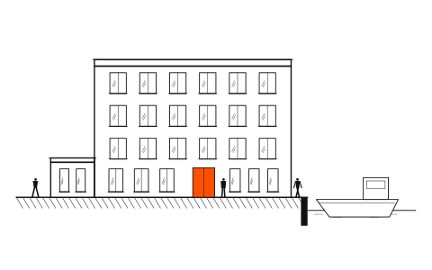
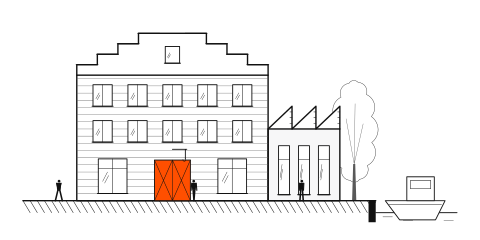
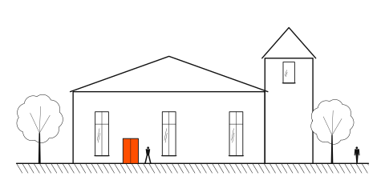

Villa Veldzicht
01
Villa rond een beschutte binnentuin, met de woonkamer gericht op de Kralingse Plas.
Architectenbureau — Rotterdam, sinds 2009
Studio Veld is een bureau van twaalf architecten in Rotterdam. Wij ontwerpen villa’s en woonblokken — en geven pakhuizen, kerken en scholen een tweede leven als woning of werkplek.

Zes projecten uit 2019–2026 — van villa tot voormalige kerk.

Villa rond een beschutte binnentuin, met de woonkamer gericht op de Kralingse Plas.

24 appartementen in een gesloten blok aan het water, waarvan 18 sociale huur.

Voormalig pakhuis met twaalf loftwoningen en vier ateliers op de begane grond.

Voormalige kerk met acht woningen rond de lichtinval van het middenschip.

Negen kadewoningen met kap en uitzicht op de Maas, direct aan de kade.

Voormalige basisschool, nu tien appartementen en een buurthuis in de zijvleugel.
Vaste prijsafspraken per fase. U weet bij elke stap waar het project staat.
We beginnen op de plek zelf: een gesprek aan tafel, een ronde over de locatie en een analyse van programma, bestemmingsplan en buren.
Schets, voorontwerp en definitief ontwerp. Bij elke ronde presenteren we in beeld en op papier — en u beslist mee.
We werken het ontwerp uit tot bestek en tekeningen, vragen offertes aan bij drie aannemers en bewaken prijs en planning.
Tijdens de bouw zijn we wekelijks op de bouwplaats. Na de oplevering blijven we aanspreekpunt voor garantie en klein onderhoud.
Studio Veld Architecten is in 2009 opgericht in Rotterdam. We zijn met zijn twaalven: architecten, een interieurontwerper, een technisch tekenaar en een projectleider. Sinds 2016 werken we vanuit een eigen pakhuis in Merwe-Vierhavens — het gebouw dat we zelf hebben getransformeerd.
We werken voor particulieren en woningcorporaties. Nieuwbouw villa’s en woonblokken, maar ook de transformatie van pakhuizen, kerken en scholen. Wat al die projecten gemeen hebben: daglicht, een heldere constructie en een gebouw dat bij de straat past.
Ze luisterden eerst en tekenden daarna. Het ontwerp past bij ons én bij de straat — en de bouw verliep zonder verrassingen.
Vertel ons kort over uw plan — een kavel, een pakhuis, een kerk of een heel woonblok. We nodigen u graag uit in ons pakhuis aan de Keilestraat, of we komen naar u toe. U hoort binnen twee werkdagen van ons.